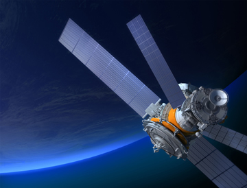

Exhibit 3
Around the Solar System and Back
Ever wonder how those new NASA engines will propel a vehicle out in space? It's not like opening a steam valve like on the Trains of the Wild West exhibit. Step in side our engineering control center of a virtual space craft as it flies through the solar system collecting samples, chasing comets, and orbiting planets. None of this could happen without you at the engine controls routing power to achieve these goals. Bring back some good samples to be analyzed!